TurtleLab samples
Pick a sample to open it in TurtleLab. It runs by itself, so you can watch the turtle draw it. Then change the blocks and see what happens. The sticky note on the page explains what the program does and why.
Nothing you change in a sample is saved unless you press Save, and the blocks you saved before are never touched. The eye button hides the blocks so you can see the whole picture. The samples are in order, easiest first.
-
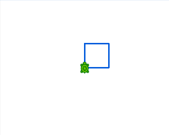
A square
Open in TurtleLabFour sides and four turns, written once and repeated.
-
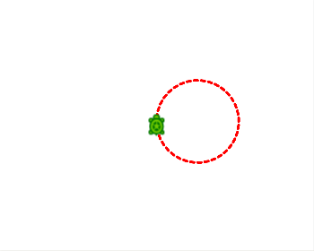
A dotted circle
Open in TurtleLabLift the pen between dashes to draw a ring of dots.
-
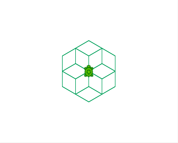
Hexagon flower
Open in TurtleLabA repeat inside a repeat: the inside draws a hexagon, the outside spins it.
-
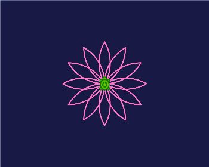
Flower
Open in TurtleLabCurved petals on a dark blue sky.
-
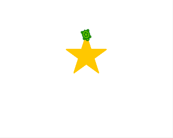
A filled star
Open in TurtleLabFive lines and a lot of turning, filled with yellow.
-
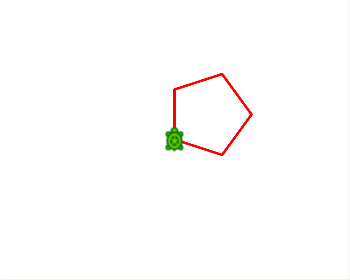
Any polygon
Open in TurtleLabOne box holds the number of sides. Change it to change the shape.
-
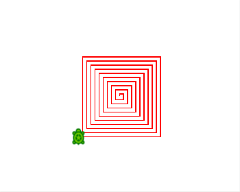
Square spiral
Open in TurtleLabEach side is a little longer than the last.
-
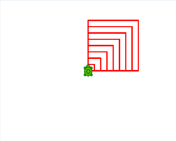
Nested squares
Open in TurtleLabPrint shows the size of every square as it is drawn.
-
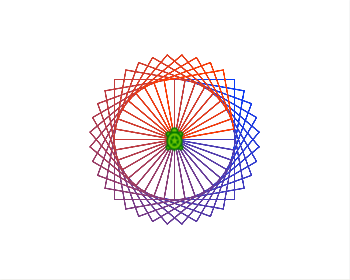
Spinning squares
Open in TurtleLabSquares turned a little each time, with colors made from a box.
-
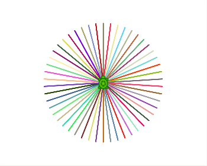
Color burst
Open in TurtleLabFifty rays, each in a color picked by chance.
-
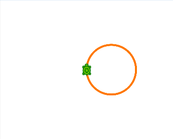
Countdown
Open in TurtleLabCounts 3, 2, 1 and then draws a circle.
-
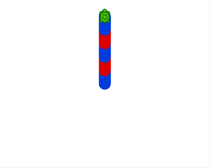
Red and blue
Open in TurtleLabIf else picks red or blue, depending on whether a number is even.
-
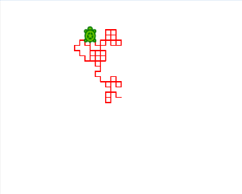
Wandering turtle
Open in TurtleLabA coin flip decides left or right, again and again.
-
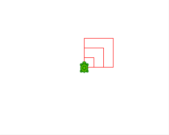
A block of your own
Open in TurtleLabTeach the turtle a new trick once, then use it again and again.
-
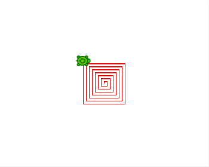
A block that calls itself
Open in TurtleLabEach call draws a side, then calls the block again a little bigger, until it is time to stop.
-
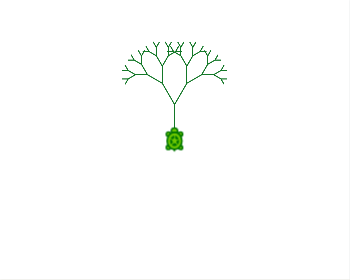
A tree
Open in TurtleLabA block that calls itself twice draws branches that split into smaller branches.
-
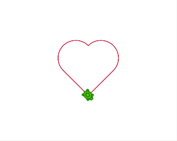
A heart to stitch
Open in TurtleLabOne unbroken line, which is what an embroidery machine likes best.
-
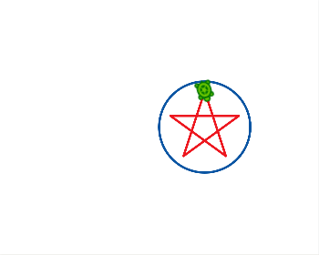
A star in a ring
Open in TurtleLabTwo colors means two threads, so the machine stops once for a thread change.
-
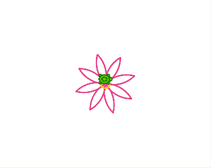
A flower to stitch
Open in TurtleLabEight petals made of two curves each, and a yellow middle for a second thread.